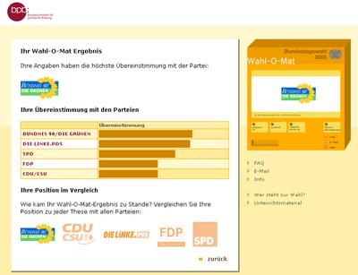

Wahlomat hilft unentschlossenen Wählern

Unter www.wahlomat.de» kann der geneigte Wähler schauen, welche Themen von welchen Parteien am ehesten vertreten werden. Anhand von 30 Thesen, denen man zustimmen oder die man ablehnen kann, wird schließlich die Partei gefunden, die man wählen sollte. Oben sehr ihr mein Ergebnis. Mal sehen, ob es meine Entscheidung …
more ...